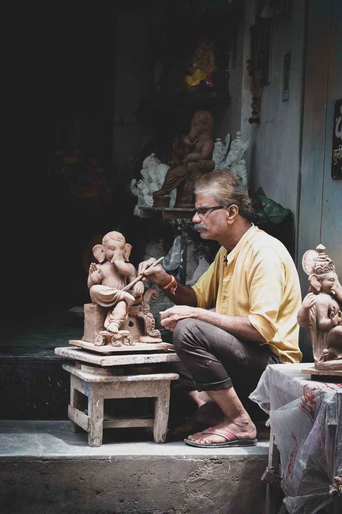

Thanjavur painting in progress · Photograph supplied for TN ARTISAN
The art of Thanjavur
Built slowly. Meant to glow.
In this close view, a fine brush adds colour and definition to a traditional devotional panel. Thanjavur paintings are recognised for their vivid figures, ornamental detail and raised gesso work, often finished with gold-coloured foil that catches the light. Each layer asks for a different kind of attention: preparing the board, laying the composition, building relief and completing the fine painted details.
The photograph lets us honour the work at its human scale: the hand, the brush and the time that rarely appears in a finished-product photograph. The artist is not decoration around the object. The artist is the reason the object exists.
Many crafts, many kinds of care
Every tradition asks for its own patience.
Explore the material, skill and hours that shape each piece.
Kumbakonam · Kalamkari
Drawn and dyed by hand
Kalamkari textile art
In this workshop image, the maker works across an extended cloth surface, balancing repeated motifs and flowing borders. Hand-painted Kalamkari depends on steady linework, planned colour and careful handling of the cloth. A large design may take many passes to complete; the maker must keep the story legible from one end of the fabric to the other.
Wood and stone carving
Shape follows the material
Carving a form into being
Carvers first read the block, plan its shape and remove material in measured stages. The rough silhouette comes before the fine edges, faces and ornament. A small slip can change a whole contour, so concentration and years of tool knowledge matter at every pass.

Clay sculpture
Earth, water, touch and fire
Clay shaped by feel
Clay workers judge moisture by touch, build a balanced form and allow it to dry at the right pace before firing. The final finish can mean another round of smoothing, painting or decoration. The potter and sculptor in these photographs show both sides of the practice: useful vessels and expressive figures.
Pottery and terracotta
Everyday craft, enduring knowledge
Vessels made for daily life
From preparing and centring clay to trimming, drying and firing, a pot passes through many skilled steps before it reaches a home. The broad market display is a reminder that one workshop can make forms for cooking, storing, planting, ceremony and celebration.
Why we built this
So good work can be found, understood and valued.
Small studios and craft groups often have to make the work, photograph it, explain it, price it, answer messages and manage delivery with very little time. This platform brings the product story, maker profile and order journey into one place, so a customer can discover a tradition and a small maker can present their work with greater clarity.
We are proud to contribute a digital storefront and a thoughtful way to tell these stories. We do not take credit for the art: the skill belongs to the makers. Our role is to help more people see it, learn about the effort behind it and choose to support it.
For artisans
Your work, in your own words.
Maker profiles can introduce a craft, district, materials and process. Listings can show clear photographs, price, dimensions, stock and care notes. Orders can be followed through their making and dispatch stages, helping customers understand the time and work each piece needs.
A dedicated place to present your craft and products
With artisans’ consent, a community partner can help document product details, photograph work, prepare listings, support digital skills and coordinate packaging or fulfilment. A shared online catalogue gives a group a practical showcase while each maker keeps their identity and story at the centre.
Support product documentation and digital access
Help small groups reach customers beyond local footfall